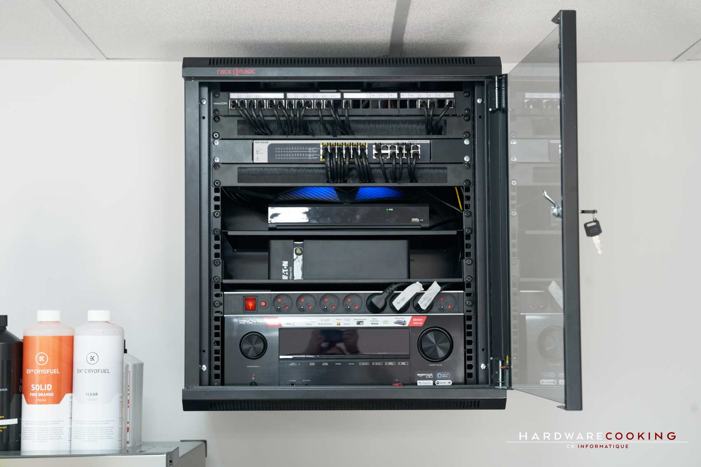

03
Réalisations
Projets Techniques
Server Bay Monitoring
Système embarqué complet de surveillance de 4 baies informatiques : mesure temps réel de la température & de l'humidité via capteur AHT20 sur ESP32, serveur intranet PHP8 / MariaDB déployé sur Raspberry Pi 400, alertes e-mail automatiques et visualisation graphique des données historiques (jour / semaine / mois / an).


Embarqué
NodeMCU ESP32
Capteur AHT20 (I²C)
Écran OLED SSD1306
C / C++
Connecteur SQL natif
→
Réseau local (Wi-Fi / Ethernet)
IP fixe · dhcpcd
UFW pare-feu
TLS / HTTPS auto-signé
→
Serveur Raspberry Pi 400
Apache2 · PHP8
MariaDB (InnoDB)
htaccess + bcrypt
PDO sécurisé
1/4
Serveur Web & Auth htaccess
2/4
BDD Merise · MariaDB · Pare-feu UFW
3/4
Objet connecté ESP32 (C++)
4/4
Site intranet PHP8 & graphiques
ESP32C++AHT20Raspberry Pi Apache2PHP8MariaDBGNU/Linux UFWTLSMerise
Optimisation Inventaire
Automatisation de la mise à jour de l'inventaire matériel par l'interfaçage entre OCS Inventory et l'outil ITSM Isilog IWS. Réduction significative du temps de traitement manuel.
MCMOCS InventoryIWS